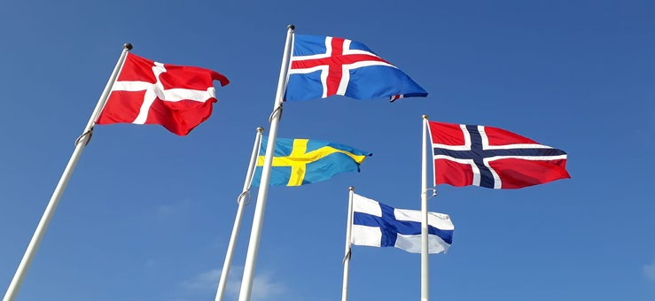
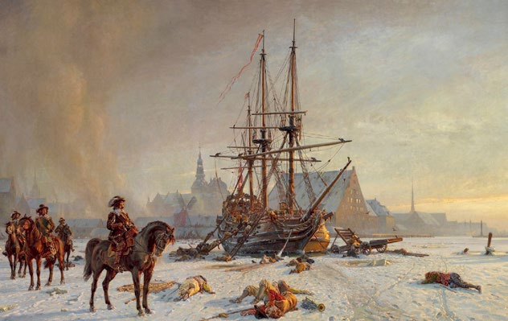
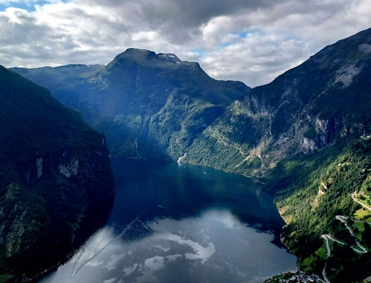

6.7 – DANMARK OG NORDEN
sidde 208
Mange danskere føler, at de i særlig grad har stærke bånd til deres nordiske nabolande. Det skyldes, at der er væsentlige historiske, kulturelle, politiske og sproglige fællestræk mellem landene. Man taler derfor ofte om en slags ”familie” af de fem nordiske lande Danmark, Sverige, Norge, Finland og Island. Et meget synligt symbol på dette fællesskab er, at alle de fem lande – med forskellige farvekombinationer – har det samme kors i deres flag.Fra venstre: Danmarks, Sveriges, Islands, Finlan
Fra venstre: Danmarks, Sveriges, Islands, Finlands og Norges flag. Foto: Tue Schou Pedersen.
Geografi Og Befolkning
De fire øvrige nordiske lande har en noget anderledes geografi end Danmark, som udgør et lille og forholdsvis tæt befolket areal. Både Sverige, Norge, Finland og Island er langt større, men til gengæld er de Europas fire tyndest befolkede lande. Disse lande har generelt et koldere klima end Danmark og meget større områder med vild natur og flere steder (særligt i Norge) også med bjerge.
Sverige er med 10,7 millioner indbyggere det land i Norden med den største befolkning. Island har med under 400.000 indbyggere den klart mindste befolk ning – som altså ikke er meget større end Aarhus' befolkning. Både Norge og Finland (med henholdsvis 5,7 og 5,6 millioner) har et indbyggertal næsten som Danmarks på 6 millioner.
Læremateriale Til Indfødsretsprøven

sidde 209
Historien Skiller Og Samler
De nordiske landes historie er i høj grad vævet sammen. Forholdet har dog ikke altid været harmonisk. Kalmarunionen (1397-1523), som er den eneste periode, hvor hele Norden har være forenet politisk, endte med, at Sverige brød ud efter årtiers hård kamp. Dette blev efterfulgt af en tid (15631721) med mange store krige mellem DanmarkNorge på den ene side og Sverige på den anden om magten over Norden og Østersøen. I Danmark betegnes disse krige ofte som ”svenskekrigene”.Maleri af den svenske belejring af København i 1658-60.
Maleri af den svenske belejring af København i 1658-60. Der er også kapitler i historien, som de nor diske befolkninger sammen ser tilbage på med en vis nostalgi. Vikingetiden og den gamle nordiske mytologi (asatroen) udgør et vigtigt fællestræk i både Danmarks, Sveriges, Norges og Islands historie. Dengang taltes der også det fælles sprog, oldnor disk, som både det nuværende danske, svenske, norske og islandske sprog har udviklet sig fra. De fire sprog er således nært beslægtede. Siden middelalderen har dansk, svensk og norsk, i modsætning til islandsk, optaget mange ord fra andre sprog – først og fremmest fra tysk. De tre sprog har bevaret og videreud viklet så mange fællestræk, at danskere, svenskere og nordmænd forholdsvis let kan læse og forstå hinandens sprog.
Størstedelen af den finske befolkning har helt andre rødder end befolkningen i de andre nordiske lande, og det finske sprog er derfor meget anderledes. Men i Finland er både finsk og svensk officielle sprog, og næsten alle elever lærer begge sprog i skolen. Det skyldes, at Finland har været styret fra Sverige fra 1200-tallet frem til 1809 og derfor længe har været præget betydeligt af svensk sprog og kultur og i øvrigt har et svensksproget mindretal. Og i Island er det også – på grund af landets langvarige tilknytning til Danmark (1380-1944) – almin deligt at lære dansk i skolen som fremmedsprog. Således er der bevaret en vis sproglig sammenknytning af alle fem lande.
De nordiske lande blev alle kristne og bekendte sig til den katolske tro i vikinge tiden og middelalderen. I forbindelse med reformationen i 1500-tallet brød de nordiske kirker med katolicismen og paven for i stedet at blive protestantiske (evangeliske-lutherske). Det har været den dominerende trosretning i Norden frem til i dag.
Læremateriale Til Indfødsretsprøven

sidde 210
Norden Efter 1945
Siden 2. Verdenskrig har de nordiske lande særligt gjort sig bemærket ved, at de er lykkedes med både at blive nogle af rigeste lande i verden og samtidig være blandt de lande med størst økonomisk lighed. Man taler ofte om den nordiske velfærdsmodel. Den er blandt andet kendetegnet ved, at staten tilbyder en lang række af velfærdsydelser (for eksempel uddannelse, sundhed og ældrepleje) til alle borgere, og ved at denne velfærd betales i fællesskab af hele befolkningen via skatter og afgifter.
Landenes udenrigspolitik har både haft forskelligheder og fællestræk. Deres forhold til EU og NATO har været forskellige. Norge og Island står uden for EU, mens Finland og Sverige først blev medlemmer af NATO i henholdsvis 2023 og 2024. Omvendt er alle de nordiske lande kendt for at prioritere FN og interna tionalt fredsarbejde højt og er også blandt de lande i verden, som giver mest i udviklings-bistand til den fattige verden.
Endvidere er der et officielt nordisk samarbejde, som har til formål at styrke de politiske, økonomiske og kulturelle bånd i Norden, for eksempel inden for miljø, kultur, forskning og forsvar. Der samarbejdes i Nordisk Råd, som består af politikere fra de nationale parlamenter og i Nordisk Ministerråd, som består af ministre fra landenes regeringer. Medlemmerne er Danmark, Sverige, Norge, Island og Finland samt de selvstyrende områder Grønland og Færøerne (under Danmark) og Ålandsøerne (under Finland).Aurlandsfjorden i det ves
Geirangerfjorden i det vestlige Norge. Foto: Tue Schou Pedersen.
Læremateriale Til Indfødsretsprøven

Fonte: Læremateriale til Indfødsretsprøven, SIRI.